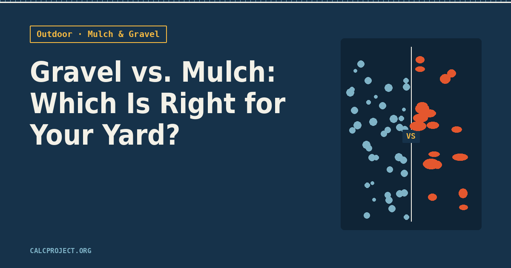

Outdoor · Mulch & Soil
Gravel vs. Mulch — Which Is Right for Your Yard?

Both gravel and mulch do the same basic job of covering bare soil, but that's about where the similarity ends. One feeds what's growing underneath it and breaks down over time. The other doesn't decompose at all, and might outlast the house. Picking the wrong one for a spot means fighting it for years — plants that struggle in gravel's heat, or a "low maintenance" mulch bed that still needs a truck of fresh material every spring. Here's how to actually decide.
Mulch feeds the soil. Gravel doesn't.
Organic mulch — bark, wood chips, shredded leaves — slowly breaks down and adds organic matter back into the soil as it does. That's exactly what you want around shrubs, perennials, vegetable beds, or anything you're actively trying to grow. The tradeoff is that "breaking down" means it also disappears: expect to top off a mulched bed by an inch or so every year, and do a fuller refresh every 2–3 years.
Gravel is inert. It doesn't feed anything, but it also doesn't rot, compact into mush, or attract termites near a foundation. Once it's down and leveled, it's essentially a one-time purchase.
Weed control: both work, but differently
Mulch suppresses weeds by blocking light, and it works best paired with a layer of landscape fabric underneath in beds you want to stay clean. Gravel does the same thing, but only as long as it stays gravel — dust, soil, and organic debris settle into it over the years, and eventually that buildup becomes just enough of a growing medium for weeds to take root in the gravel itself. A gravel bed on landscape fabric stays cleaner for longer, but "gravel means never weeding again" isn't quite true after year three or four.
Quick check: if you're planting things you want to grow, mulch. If it's a path, a dry border, or a spot where nothing is supposed to grow at all, gravel.
Heat, drainage, and what's actually planted there
Gravel drains fast and doesn't hold moisture, which makes it the right call for drought-tolerant plants, succulents, dry creek beds, and drainage areas around downspouts. But it also absorbs and radiates heat, which can stress out moisture-loving plants or anything planted close to a house foundation in a hot climate — a gravel bed under a west-facing window can run noticeably hotter than the surrounding air on a summer afternoon.
Mulch does the opposite: it holds moisture in the soil and keeps root zones cooler, which is why it's the standard choice around trees, shrubs, and flower beds. In a genuinely hot, dry climate, that moisture retention is a real advantage for anything that isn't drought-adapted.
Cost adds up differently over time
Mulch is cheaper per bag or per yard up front, but it's a recurring cost — budget for a top-off most years. Gravel costs more to install initially (and delivery/spreading for larger areas isn't cheap), but there's effectively no repeat purchase after that, aside from the occasional weed-and-refresh pass.
You don't have to pick just one
A lot of yards use both: gravel for paths, borders, and drainage strips, mulch inside the actual planting beds. A steel or plastic edging strip between the two keeps the gravel from migrating into the mulch (and vice versa) as both settle over the first season.
Ready to figure out how much you actually need? Run your numbers through the mulch & soil calculator for planting beds, or the gravel calculator for paths and drainage areas.